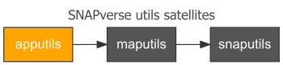

SNAPverse R package ecosystem development frozen.
Development of the SNAPverse R package ecosystem has been frozen indefinitely. This project was never directly funded. I began it out of personal interest, but no longer work for SNAP. It will remain archived here for historical reference.
apputils is an R package containing common utilty functions, settings and references for development use across multiple Shiny apps. It has a shinydashboard focus. apputils is a satellite member of the SNAPverse collection of R packages. It supports other satellites in the verse, including maputils and snaputils.

Functionality
Package functionality and areas of support covered by apputils include:
- Overrides of
shinydashboard::valueBox,shinydashbaord::infoBoxandshiny::iconthat support the use of local thumbnails images. - Stat boxes: special type of value or info boxes for common statistics using a collection of icons provided by the package.
- Adjusted CSS styles and integration with packages like
rintrojsandshinytoastrfor interactive tours and toast messages. - Functions for including app information widgets such as citations, contact info, frequently asked questions and more.
- Encapsulation of working with data frames in server.R in specific contexts and use cases to simplify code.
- Wrappers around specific use cases for Leaflet maps, data tables, and general plotting in apps.
- Helper functions for dynmaic reports.
Installation
You can install maputils from github with:
# install.packages('devtools')
devtools::install_github("leonawicz/apputils")